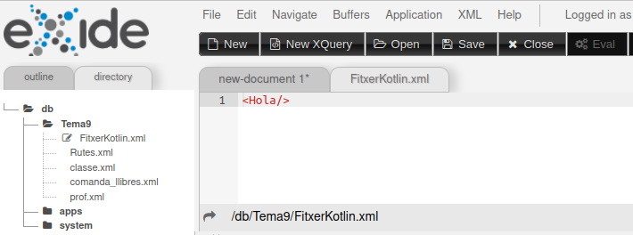
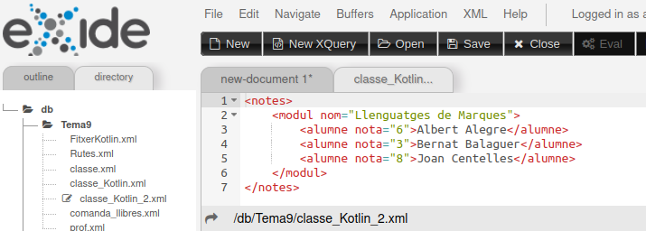

7.1.5 - Modificar la Base de Dades
Per a poder guardar documents en la Base de Dades ens aprofitarem de les funcions vistes en la pregunta 6.2.7. Per mig d'elles podíem modificar la Base de Dades utilitzant aquestes funcions dins una sentència XQuery: crear col·leccions, guardar documents, ...
Per tant, serà tan senzill com executar una sentència XQuery. La única dificultat serà jugar amb les cometes: en la sentència XQuery li hauran d'arribar a eXist-db alguns paràmetres amb cometes (simples o dobles).
Com que anem a modificar la Base de Dades, ara sí que ens haurem d'autenticar.
Mirem primer un programeta per a crear un document extremadament senzill, amb un únic element buit. Poseu-li el nom de Prova9_XQJ_GuardarDocument_1.kt:
import net.xqj.exist.ExistXQDataSource
fun main() {
val s = ExistXQDataSource()
s.setProperty("serverName", "localhost")
s.setProperty("port", "8080")
s.setProperty("user", "admin")
s.setProperty("password", "admin")
val conn = s.getConnection()
val exp = conn.createExpression()
exp.executeCommand("xmldb:store(\"Tema9\", \"FitxerKotlin.xml\", \"<Hola/>\")")
conn.close()
}Observeu, com en aquest exemple hem escapat les cometes dobles, per a que arriben a eXist-db. Si refresquem el directori en eXide, veurem que ja apareix el document nou, i podrem veure el seu contingut

Mirem un altre exemple, en el qual guardarem un altre document, més elaborat. És el mateix document que el que vam guardar en un fitxer en l'exemple Prova7_XQJ.kt, però ara guardant-lo en la Base de Dades.
Primer veurem una implementació en la qual ens baixem el resultat de la sentència de la qual volem guardar el resultat. Observeu com juguem amb les cometes simples i dobles, per no haver d'escapar les cometes dobles. Es mostra el resultat de la sentència de guardar el document, per veure que és correcta. Guardeu el programa amb el nom Prova9_XQJ_GuadarDocument_2.kt:
import net.xqj.exist.ExistXQDataSource
import java.io.File
import java.io.IOException
import java.util.Properties
fun main() {
//val f = File("notes.xml")
val s = ExistXQDataSource()
s.setProperty("serverName", "89.36.214.106")
s.setProperty("port", "8080")
s.setProperty("user", "admin")
s.setProperty("password", "ieselcaminas.ad")
val conn = s.getConnection()
val sent = "for \$classe in /classe " +
"return <notes><modul nom=\"{\$classe/assignatura/text()}\">" +
"{for \$alumne in \$classe//alumne " +
"order by \$alumne/cognoms " +
"return <alumne nota=\"{\$alumne/nota/text()}\">" +
"{concat(\$alumne/nom/text(), \" \", \$alumne/cognoms)}" +
"</alumne>}</modul></notes> ";
val cons = conn.prepareExpression (sent)
val rs = cons.executeQuery ()
var text ="<?xml version=\"1.0\" ?>\n"
while (rs.next()) {
text += rs.getItemAsString (null)
}
val col = "Tema9"
val doc = "classe_Kotlin.xml"
val com = "xmldb:store('$col', '$doc', '$text')"
println(com)
conn.createExpression().executeCommand(com)
conn.close()
}Evidentment ho podíem fer més curt, ja que en el programa no manipulem el resultat de la sentència XQuery. Aquesta és una segona versió del mateix programa, que queda més curta. Guardeu-lo amb el nom Prova10_XQJ_GuardarDocument_3.kt:
import net.xqj.exist.ExistXQDataSource
fun main() {
//val f = File("notes.xml")
val s = ExistXQDataSource()
s.setProperty("serverName", "89.36.214.106")
s.setProperty("port", "8080")
s.setProperty("user", "admin")
s.setProperty("password", "ieselcaminas.ad")
val conn = s.getConnection()
val sent = "for \$classe in /classe " +
"return <notes><modul nom=\"{\$classe/assignatura/text()}\">" +
"{for \$alumne in \$classe//alumne " +
"order by \$alumne/cognoms " +
"return <alumne nota=\"{\$alumne/nota/text()}\">" +
"{concat(\$alumne/nom/text(), \" \", \$alumne/cognoms)}" +
"</alumne>}</modul></notes> "
val col = "Tema9"
val doc = "classe_Kotlin_2.xml"
val com = "xmldb:store('$col', '$doc', $sent)"
println(com)
conn.createExpression().executeCommand(com)
conn.close()
}I aquest seria el resultat:

Nota
Aquestos exemples no es podrien fer connectant amb el servidor de l'Institut.
Si heu tingut problemes amb la instal·lació de eXist-db, no cal que feu aquestos exemples
Llicenciat sota la Llicència Creative Commons Reconeixement NoComercial CompartirIgual 2.5